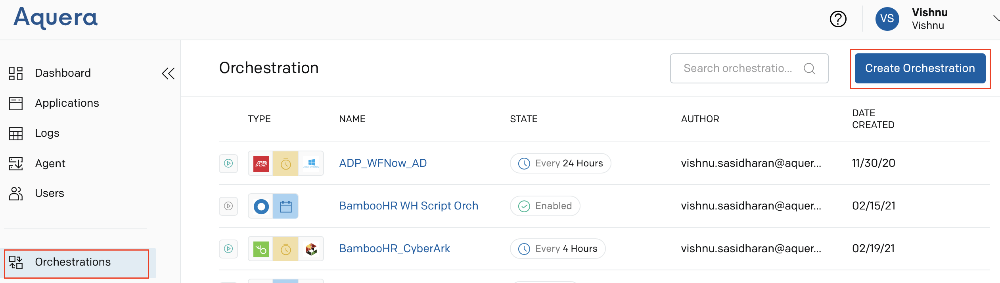
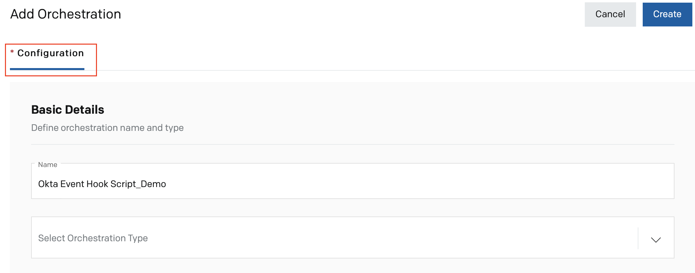
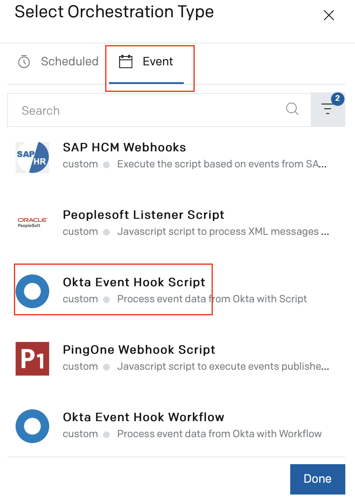
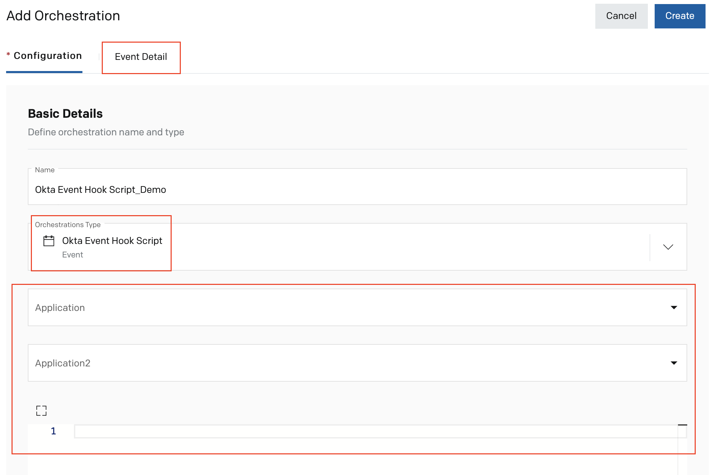

Okta Event Hook Workflow Orchestration Setup Guide
Overview
Okta Event hooks are outbound calls triggered at specific events from Okta to a custom code. Unlike Okta Inline Hooks, Okta event hooks are asynchronous and the Okta process flow continues, after sending the call, without waiting for a response from the called service.
The Okta Event Hook Workflow Orchestration by Aquera is used to set up workflows that must be executed for specific events in Okta. This guide explains how to setup Okta Event Hook Workflow orchestration in Aquera. It also explains the procedure to set up event hooks in Okta and integrate it with the Aquera's Okta Event Hook Workflow orchestration.
Setting Up Okta Event Hook Workflow Orchestration
The Okta Event Hook Workflow orchestration must be first set up in Aquera with the workflow to be executed when some specific events are triggered in Okta.
An event from Okta can be used in the workflow orchestration as a variable. The name of this variable is "event".< need to add more details>
- Log in to Aquera Admin console.
- Navigate to the Orchestrations page and click Create Orchestration.

The Configuration tab of the Add Orchestration page is displayed.

- Provide a Name for the orchestration and click on the Select Orchestration Type field. The Select Orchestration Type pop-up window is displayed.

- Click the Event tab on the pop-up window and select Okta Event Hook Script as the type of orchestration.
- Click Done. Additional fields and the Event Detail tab are displayed on the Add Orchestration page.

- Select the Okta application that you have created from the Application drop-down. <To confirm>
<Application2?>
- In the script editor area, enter the script to be executed for processing the inbound event from Okta.
<image>
Here is a sample script to process the inbound event from Okta:
final = {status:200,details:"The message was processed correctly."}; - Click Create at the top right-corner of the page to create the orchestration.
- Click the Event Detail tab. A URL is displayed on the page.

This URL will have to be copied and configured as the event hook endpoint when you create the Event Hook in Okta. For details, refer to the Setting up Event Hooks in Okta section.
- Click Create Token. A token is generated and is displayed on the Generate Token pop-up window.

- Copy the token and save it. This token will have to be configured when you create the Event Hook in Okta. For details, refer to the Setting up Event Hooks in Okta section.
- Close the pop-up window.

In case you have lost the generated token, you can click Refresh Token to generate a new token. Then, this new token will have to be configured in Okta.
- Click Save Changes.
Setting up Event Hooks in Okta
- Log in to Okta.
- Navigate to Admin > Workflow > Event Hooks. The Event Hooks page is displayed.

- Click Create Event Hook. The Add Event Hook Endpoint window is displayed.

- Enter values in the following fields:
Field Description Name Enter any name for the event hook. URL Copy the URL from the Event Detail tab of the Okta Event Hook Script orchestration in Aquera Admin console and paste it here. Refer to the Setting Up Okta Event Hook Script Orchestration section for details. Authentication field Enter Authorization, which is the name of the authorization header.
Note: Okta Event Hooks use header-based authentication.
Authentication secret Copy the token that was generated for the Okta Event Hook Script orchestration in Aquera Admin console and paste it here. Refer to the Setting Up Okta Event Hook Script Orchestration section for details.
Requests Custom header fields Optional field name / value pairs to be sent with the request to Aquera event hook orchestration.
Subscribe to events Select the types of events that must be sent to the orchestration.

- Click Save & Continue. The event hook is now active.
Request to Orchestration and Response
<To add the log information of the request and response, if any.>